Schillernde Pokémon
Wie oft Pokémon schillern, was die Chance erhöht, welche Pokémon immer oder nie schillern – und die 25 Pokémon mit einer zweiten Shiny-Färbung.
Shiny-Chance
Die Einstellung „Shiny-Chance“ (Reiter „Allgemein“) legt die Grundchance fest. Du wählst sie zu Spielbeginn.
| Einstellung | Chance | Mit Schillerpin | Beschreibung im Spiel |
|---|---|---|---|
| 8192 | 1 zu 8.192 | ≈ 1 zu 2.731 | Sehr geringe Chance auf Shiny. Standard aus Generation III. |
| 4096 | 1 zu 4.096 | ≈ 1 zu 1.366 | Geringe Chance auf Shiny. Standard ab Generation VI+. |
| 2048 | 1 zu 2.048 | ≈ 1 zu 683 | Gute Chance auf Shiny-Begegnung. |
| 1024 | 1 zu 1.024 | ≈ 1 zu 342 | Hohe Chance auf Shiny-Begegnung. |
| 512 | 1 zu 512 | ≈ 1 zu 171 | Sehr hohe Shiny-Chance. |
Schillerpin
Mit dem  Schillerpin würfelt das Spiel bis zu 2-mal neu, wenn ein Pokémon nicht schillert. Das gilt für wilde Pokémon, Geschenke, Eier und die Starter-Vorschau.
Schillerpin würfelt das Spiel bis zu 2-mal neu, wenn ein Pokémon nicht schillert. Das gilt für wilde Pokémon, Geschenke, Eier und die Starter-Vorschau.
Du bekommst ihn von Professor Eich im Labor in Alabastia, sobald dein Johto-Pokédex vollständig ist. Welche Arten dafür zählen, steht unter Pokédex vervollständigen.
Weitere Einflüsse
- Lockparfüm, Super-Lockparfüm und Top-Lockparfüm: Solange das Item wirkt, gibt es einen zusätzlichen Wurf. Zu kaufen in Dukatia City.
- Starter: Die Vorschau im Labor würfelt einmal pro Pokéball. Der Starter schillert genau dann, wenn er in der Vorschau geschillert hat. Der Schillerpin zählt mit.
- Wo du nicht fangen kannst, gibt es keine schillernden Pokémon.
- Umherstreifende Pokémon: Ob sie schillern, entscheidet sich einmal, wenn sie loslaufen.
- Nuzlocke-Einstellung „Shiny-Klausel“: „An“ – Spieler kann immer Shiny Pokémon fangen. Empfohlen! „Aus“ – Spieler fängt Shiny Pokémon nur bei erster Begegnung.
Feste Regeln für einzelne Pokémon
Immer schillernd
Schillernd genau wie in der Vorschau
Bisasam (Alabastia), Glumanda (Alabastia), Schiggy (Alabastia), Endivie (Wurzelheim), Endivie (Neuborkia), Feurigel (Wurzelheim), Feurigel (Neuborkia), Karnimani (Wurzelheim), Karnimani (Neuborkia)
Tausch-Pokémon: nie schillernd
Nidoran♂ (Untergrundpfad), Nidorino (Route 11), Mauzi (Kampfzone), Machollo (Dukatia City), Porenta (Orania City), Jurob (Zinnoberinsel), Onix (Viola City), Voltobal (Oliviana City), Lektrobal (Zinnoberinsel), Schlurp (Route 18), Tangela (Zinnoberinsel), Seeper (Floßbrunn), Pantimos (Ebenholz City), Pantimos (Route 2), Rossana (Azuria City), Stahlos (Oliviana City), Samurzel (Metarost City), Plusle (Baumhausen City)
Zweite Shiny-Färbung
Diese 25 Pokémon haben eine zweite Shiny-Färbung. Das Spiel zeigt sie, wenn die Einstellung „Shinyfarbe“ (Reiter „Allgemein“) auf „An“ steht.


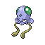
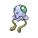


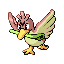


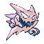
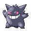
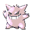
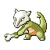

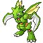


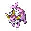

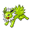


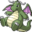
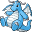


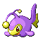


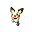


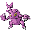


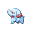
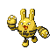

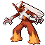